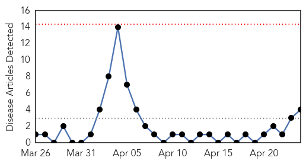
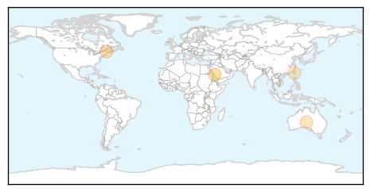
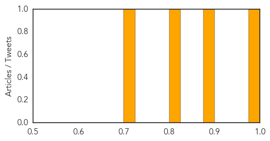
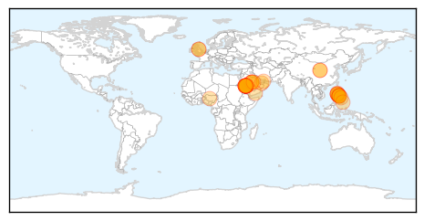
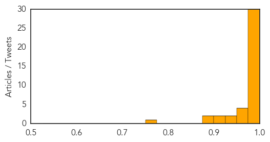

Meningitis
30-Day Web Trend
0 alerts, 0 warnings

30-Day Twitter Trend
0 alerts, 0 warnings

Article Locations
Article Confidences
Top Articles:
Top Tweets:
-
No tweets found for Apr 24, 2014
MERS
30-Day Web Trend
14 alerts, 0 warnings

30-Day Twitter Trend
3 alerts, 0 warnings

Article Locations
Article Confidences
Top Articles:
- 1.000
- A Deadly Virus Is Breaking Out In Saudi Arabia
- 0.999
- Middle East respiratory syndrome coronavirus (MERS-CoV) – update
- 0.999
- Another Case Of Human Infection With MERS Coronavirus Reported In Jordan
- 0.999
- WHO Expresses Concern About Rising Number of MERS-CoV Cases
- 0.999
- Exported MERS cases 'very likely,' WHO warns; Canada on the lookout, PHAC says
- 0.999
- Saudi Arabia sees 11 new MERS cases as virus sweeps to Mecca
- 0.999
- Spike in MERS Raises Concerns about Precautions
- 0.999
- WHO sees 'slightly more' MERS spread as 12 new cases cited
- 0.999
- New MERS deaths reported in Saudi Arabia
- 0.999
- Canada on lookout for MERS as cases spread worldwide
- 0.998
- The deadly MERS virus is spreading at a terrifying rate
- 0.998
- King bids to reassure Saudis as MERS deaths hit 85
- 0.998
- King bids to reassure Saudis as MERS deaths hit 85
- 0.998
- 2 more deaths from MERS virus
- 0.997
- Saudi Arabia announces jump in new cases of deadly MERS virus
- 0.997
- Saudi announces 11 new MERS infections
- 0.996
- MERS cases rise amid vaccine hopeHealthcare
- 0.996
- Saudi Arabia reports 11 new cases of MERS virus first in Makkah
- 0.996
- WHO vigilant on new Middle East Respiratory Syndrome developments
- 0.996
- Saudi announces 11 new MERS infections
- 0.996
- Saudi Arabia reports 11 new cases of MERS virus, first in Mecca
- 0.996
- On guard vs MERS CoV
- 0.995
- Saudi Arabia reports 11 new cases of MERS virus, first in MakkahHealthcare
- 0.993
- Saudi King visits Jeddah to allay Mers fears
- 0.992
- Saudi Arabia says MERS virus deaths reach 85 as new infections include pilgrim in Mecca
- 0.988
- Philippines DOH: Only six passengers not contacted from EY0424, MERS-CoV flyer published
- 0.988
- Saudi king visits Jeddah as two more die of Mers
- 0.987
- Saudi Arabia’s MERS virus outbreak demands transparency
- 0.987
- Another OFW quarantined in GenSan for suspected MERS-CoV
- 0.985
- 4 airline passengers from northern Mindanao cleared of MERS
- 0.972
- Two more MERS coronavirus deaths reported in Saudi Arabia
- 0.966
- News Scan for Apr 24, 2014
- 0.963
- Only 4 Etihad passengers not accounted for
- 0.951
- Two more MERS coronavirus deaths reported in Saudi Arabia
- 0.944
- Health exec: Suspected Kapampangan MERS-CoV carriers cleared
- 0.925
- MERS-CoV and mothers
- 0.904
- How Dubai Ambulance prevents Mers Coronavirus from spreadingHealthcare
- 0.903
- MERS battle: Fakeih orders new measures
- 0.892
- Final 4 remain in Middle East Respiratory Syndrome–Corona Virus hunt
- 0.888
- Search for “Mers-CoV carriers”: Cops can’t find last passenger
- 0.756
- Punto! Central Luzon -
Top Tweets:
-
No tweets found for Apr 24, 2014